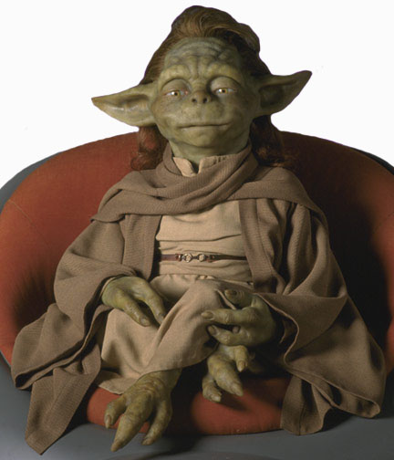

Movies
Yaddle was operated in the 1999 film Star Wars: Episode I The Phantom Menace by Phil Eason. The model for Yaddle was originally created by concept artist Iain McCaig as a sketch for a young Yoda, but was later put in the movies as Yaddle, a female member of Yoda's species.
Comics
Yaddle's Tale: The One Below is a 16-page comic published in Star Wars Tales 5, featuring the Jedi Master Yaddle. The comic takes place sometime before the Battle of Naboo, telling the story of how and why she was granted the title of Master and her seat on the Jedi Council.
Novels
The Master of Disguise is the fourth in a series of young reader novels that chronicle the adventures of Obi-Wan Kenobi and Anakin Skywalker between Star Wars: Episode I The Phantom Menace and Star Wars: Episode II Attack of the Clones. Narration for the audio version was performed by Jonathan Davis.